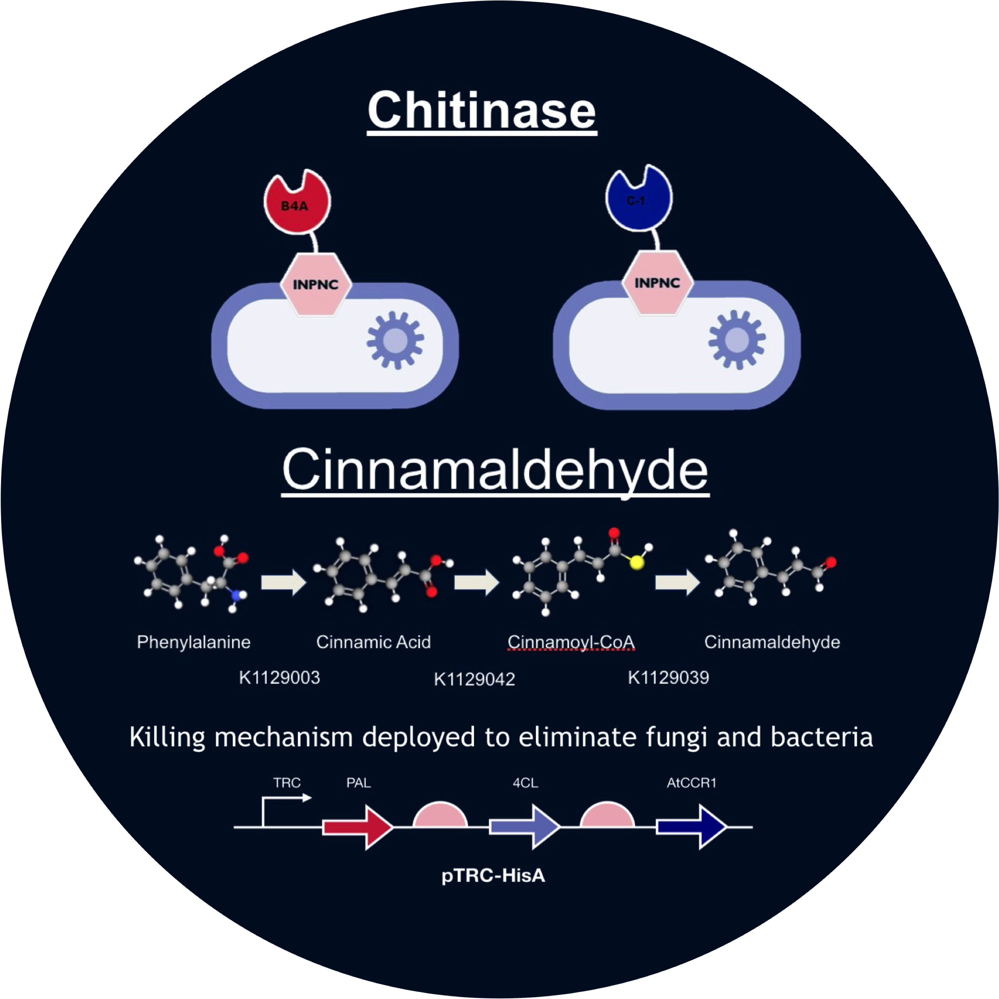
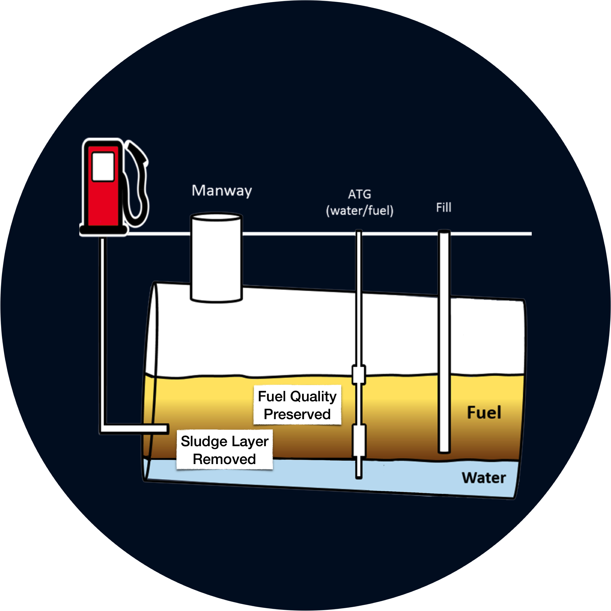

Engineered Microbes to Sense and Detect ETEC
MAY 2017 - NOV 2017
Group Members
|
Mentors
|
AbstractEach year Enterotoxigenic Escherichia coli (ETEC), a form of pathogenic E. coli known for causing traveler’s stomach, affects millions of travelers. ETEC produces two toxins, a heat labile and a heat stable version. The basis of the project is to complete three different steps: sense ETEC, respond to its presence, and package the sense/response module in a cellulose matrix. The goal of the sensing step is to engineer a non-pathogenic E. coli to detect the pathogenic E. coli communication signals. The response section involves engineering the same E. coli to glow green upon the detection of harmful bacteria. In order to package the sense and respond E. coli, cellulose binding domains will be engineered to be expressed on the CsgA portions of curli specific proteins on E. coli. We chose this project after brainstorming many problems that United States Air Force personnel face on a daily basis. Traveling for months at a time, those deployed become susceptible to many pathogens in the water supply, especially harmful strains of E. coli. ETEC is the most common cause of traveler's stomach. We can help detect ETEC by using this modular system, potentially eradicating the pathogens from the water and the body. |

|

|
The ProblemThere are three clear distinct layers that form in fuel containment systems: A water layer, the sludge layer, and the actual fuel layer. The formation of these layers usually takes a few weeks, but over time, water seeps into these underground tanks due to imperfections with storage techniques. With this water, microorganism contamination also comes into the mix. Now, a perfect environment for these microorganisms is present, because the water provides the perfect living conditions, and the biofuel contains high amounts of FAMEs (Fatty Acid Methyl Esters) for the microorganisms to feed on. Due to the density difference between fuel and water, the fuel sits on top, the water sits on the bottom, and the microorganisms sit in the middle forming the sludge, which is more commonly known as a biofilm. |
Our ApproachWe split our project up into three parts: Detect, Deliver, and Destroy Detect C4-HSL, using the RhlR receptor gene. Deliver the plasmid to the biofilm using E. coli's natural chemotactic ability by expressing the protein CheZ Destroy the bacterial and fungal biofilm by deploying two chitinase constructs to destroy chitin in the fungal cell walls, then utilizing cinnamaldehyde to kill the bacteria and fungi, which prevents biofilm formation. |

|

|
Detect and DeliverOur microbe will tumble through the fuel searching for C4-HSL, a molecule secreted by Pseudomonas aeruginosa, a bacteria commonly found in biofilms. Once C4-HSL is sensed, the protein CheZ is produced, which causes the microbe to move in a straight-line path. As higher concentrations of C4-HSL are found, the microbe moves closer to the biofilm. |
DestroyAfter the engineered microbe is delivered to the biofilm, it must eliminate the fungal and bacterial contaminants present there. Cinnamaldehyde is used in order to permeate through the cell membrane since it is small enough to enter the phospholipid bilayer. However, fungi has additional protection cell wall that must be punctured to allow access to the membrane. The cell wall is anchored to the membrane by a polymer called chitin, so an additional enzyme called chitinase was used to open up the cell wall. |
 |

|
SolutionOnce our three steps have been implemented, the engineered microbe will be dispersed through the biofilm. Theoretically, the cinnamaldehyde will kill all living microorganisms in the biofilm, including the engineered microbe. Thus, the biofilm will effectively be destroyed. |
ResultWith the sludge layer removed, biofuels will be a much more viable option for the consumer. With biofilms removed, fouling, degradation, and corrosion will be effectively eliminated from the storage process. This allows biofuels to be used more regularly resulting in a cheaper and healthier fuel for the world today. |
 |
|
|
Our Music Video!We had a lot of fun working on our iGEM project, including the creation of our music video. |